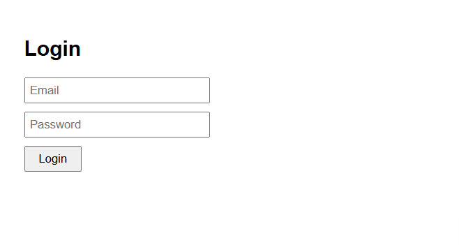
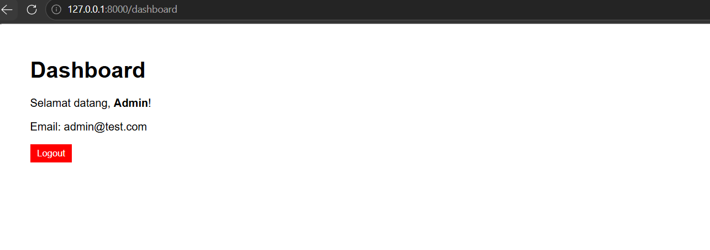

Laravel UI Bootstrap,
Authentication & Templating
Laporan resmi praktikum — Implementasi sistem autentikasi bawaan Laravel menggunakan package laravel/ui, integrasi template SB Admin 2, dan manajemen pengguna dengan operasi CRUD lengkap.
Pendahuluan & Tujuan
Pendahuluan
Melanjutkan praktikum sebelumnya, praktikum ini membahas integrasi fitur autentikasi ke dalam proyek Laravel menggunakan package laravel/ui. Package ini secara otomatis men-generate controller, model, view, dan route yang diperlukan untuk proses login, registrasi, dan pengelolaan sesi pengguna.
Selain autentikasi, praktikum ini juga mencakup penerapan template admin berbasis Bootstrap yaitu SB Admin 2 dari StartBootstrap, serta implementasi fitur manajemen pengguna dengan pola Resource Controller yang menyediakan operasi CRUD (Create, Read, Update, Delete) secara terstruktur.
Tujuan Praktikum
- Menginstalasi dan mengkonfigurasi package laravel/ui untuk autentikasi bawaan Laravel.
- Mengunduh dan mengintegrasikan template Bootstrap SB Admin 2 ke dalam proyek Laravel.
- Memahami konsep layouting dengan Blade Template Engine menggunakan @extends, @yield, dan @include.
- Mengimplementasikan Resource Controller untuk manajemen pengguna (CRUD).
- Melakukan kustomisasi tabel users dan seeding data menggunakan Artisan.
Lingkungan Pengembangan
Tools & Teknologi
Metodologi & Implementasi
Konfigurasi Database
Sebelum menjalankan autentikasi, database harus dikonfigurasi terlebih dahulu melalui file .env di root proyek Laravel. Buka file tersebut dan sesuaikan nilai berikut:
Instalasi Package Laravel/UI & Autentikasi
Package laravel/ui menyediakan scaffolding antarmuka pengguna untuk autentikasi. Instal melalui Composer, lalu jalankan perintah artisan untuk men-generate scaffold autentikasi berbasis Bootstrap:
INFO Authentication scaffolding generated successfully.
INFO Bootstrap scaffolding installed successfully.
WARN Please run [npm install && npm run dev] to compile your fresh scaffolding.
Selanjutnya compile aset front-end menggunakan npm:
Setelah scaffolding berhasil, Laravel secara otomatis men-generate file-file berikut:
Controllers yang di-generate
Views yang di-generate
Migrasi Database & Kustomisasi Tabel Users
Jalankan migrasi untuk membuat tabel-tabel autentikasi secara otomatis. Jika database belum ada, Laravel akan memberikan konfirmasi pembuatannya:
Struktur Awal Tabel Users
| # | Name | Type |
|---|---|---|
| 1 | id | bigint(20) |
| 2 | name | varchar(255) |
| 3 | varchar(255) | |
| 4 | email_verified_at | timestamp |
| 5 | password | varchar(255) |
| 6 | remember_token | varchar(100) |
| 7 | created_at | timestamp |
| 8 | updated_at | timestamp |
Untuk kebutuhan aplikasi, perlu ditambahkan field username, level, dan status. Buat migration baru:
Buka file migrasi yang baru dibuat di database/migrations/ dan isi dengan kode berikut:
Struktur Tabel Users Setelah Kustomisasi
| # | Name | Type |
|---|---|---|
| 1–8 | ... (field bawaan) | — |
| 9 | username | varchar(255) UNIQUE |
| 10 | level | varchar(255) |
| 11 | status | enum('ACTIVE','INACTIVE') |
Seeding User Admin
Buat seeder untuk mengisi data admin awal menggunakan Artisan:
Buka file database/seeders/AdminSeeder.php dan isi dengan kode berikut:



Templating dengan SB Admin 2
Unduh template SB Admin 2 dari startbootstrap.com/theme/sb-admin-2, kemudian extract. Salin seluruh isi folder asset ke dalam public/sbadmin/ pada proyek Laravel.
Halaman Login dengan SB Admin 2
Ganti isi resources/views/layouts/app.blade.php dengan template login SB Admin 2. Perhatikan penggunaan helper asset() untuk memanggil file statis:
Layout Global — main.blade.php
Buat file baru resources/views/layouts/main.blade.php sebagai layout utama aplikasi. Layout ini menggunakan @include untuk memanggil sidebar dan topbar, serta @yield untuk menyuntikkan konten dari view lain:
Sidebar & Topbar
Buat dua file partial di resources/views/layouts/:
Cara Penggunaan Layout
Untuk menggunakan layout main.blade.php pada view lain, gunakan sintaks @extends dan @section:


Manajemen Users — Resource Controller (CRUD)
Buat Resource Controller untuk manajemen pengguna. Resource Controller menyediakan 7 method secara otomatis (index, create, store, show, edit, update, destroy):
Tambahkan route resource di routes/web.php:
Pemetaan Route Resource
| Method | URI | Action | Route Name |
|---|---|---|---|
| GET | /users | index | users.index |
| POST | /users | store | users.store |
| GET | /users/create | create | users.create |
| GET | /users/{user} | show | users.show |
| PUT/PATCH | /users/{user} | update | users.update |
| DELETE | /users/{user} | destroy | users.destroy |
| GET | /users/{user}/edit | edit | users.edit |
CREATE — Tambah User Baru
View form tambah user di resources/views/user/create.blade.php menggunakan layout main dan Select2 untuk pemilihan level:
READ — Daftar Users
View list menggunakan DataTables untuk pencarian dan paginasi otomatis:
UPDATE — Edit User
DELETE — Hapus User
Tombol hapus menggunakan konfirmasi JavaScript dan method spoofing DELETE:


Kesimpulan
Ringkasan Praktikum
Praktikum ini telah berhasil mendemonstrasikan beberapa konsep penting dalam pengembangan aplikasi web menggunakan Laravel:
- Package laravel/ui mempercepat pembuatan sistem autentikasi dengan men-generate controller, model, view, dan route secara otomatis, termasuk halaman login, register, dan forgot password.
- Blade Template Engine memungkinkan pemisahan tampilan yang bersih melalui mekanisme @extends, @yield, @section, dan @include, sehingga perubahan layout global cukup dilakukan di satu file.
- Integrasi template SB Admin 2 menunjukkan fleksibilitas Laravel dalam mengadopsi template HTML/CSS pihak ketiga melalui mekanisme asset() helper.
- Resource Controller menyederhanakan implementasi CRUD dengan memetakan 7 route secara konvensional, mencerminkan prinsip RESTful API dalam aplikasi web.
- Fitur Migration dan Seeding pada Laravel memudahkan pengelolaan skema database secara terstruktur dan reproducible.